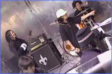
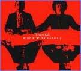
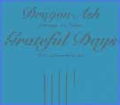

일본 음악계에서 가장 활발한 활동과 영향력을 끼치고 있는 그룹인 드래곤 애쉬(DRAGON ASH). 보통 일본 힙합의 3대 그룹으로 m-flo, 지브라, 드래곤을 꼽는데, 드래곤 애쉬의 장르는 엄격하게 말해 힙합이라고 할 수는 없다. 굳이 장르를 구분하자면 펑크 힙합 정도?
▲우리는 DRAGON ASH!
후루야 켄지 (Vo＆G)
1979년 2월 9일생
현재 일본 음악 중에서 제일을 자랑하는 음악적 행동력과 순발력으로, 드레곤 애쉬를 강력하게 견인한 중요 인물. 그의 다면성이 드레곤 애쉬의 작곡, 스테이지, 프로듀스, 워크에 있어 다양하게 발휘된다.
사쿠라이 마코토 (Dr)
1979년 2월 7일생
소년 시절의 풋풋함을 아직까지 간직하고 있어 팬뿐만 아니라 멤버들에게도 각별한 사랑을 받고 있는 파워 넘치는 드러머
바바 이쿠조 (B)
1965년 11월 1일생
드레곤 애쉬 활동 이전에 다양한 밴드 생활을 해 왔다. 밴드에서 가장 연장자다. 그런 이유 때문에 때론 냉정한 느낌이 일면 발견되기도 하지만 세련된 용모와 엉뚱한 개그와 매력을 발산하는 베이시스트
BOTS (보츠) (Turn table)
1978년 5월 30일생
99년 정식 가입한 보츠는 드레곤 애쉬의 '눈에 띄는 비밀
병기' 적 존재
▲DRAGON ASH가 걸어온 길..
1996년
5월 : 후루야 켄지와 사쿠라이 마코토, 바바 이쿠조가 모여 Dragon Ash 결성
8월 : 카와사키 CLUB CITTA에서 최초의 라이브
1997년
2월 : 시부야 NEST로 「마루야마 혼합물 나이트 VOL.2」에 참가,
1st MiniAlbum <The Day dragged on>로 데뷔
3월 : 시부야 ON AIR WEST로 데뷔 라이브
4월 : 2nd Mini Album <PUBLIC GARDEN > 릴리스
5월 : TV 드라마「연，했다.」(후지텔레비젼 계)에 켄지 출연
10월 : 1st Single <Rainy Day And Day> 릴리스
11월 : 시부야 ON AIR WEST에 완만라이 「1st Album Anniversary“Mustang!」
1st Album <Mustang!> 릴리스
12월 : 시부야 NEST에 애니메이션 <바이러스> 이벤트 출연
1998년
1월 : NISSIN POWER STATION에 「Dynamite Party Part V」출연
5월 : NISSIN POWER STATION에 「SATURDAY NIGHT R&R SHOW'98」출연
1st MAXI Single「양은 또가 탐하다 반복한」릴리스
6월 : 히가시메이한에 「MTV JAPAN Presents High Times TOUR」감행
2nd Single「양은 또가 탐하다 반복한(TV EDIT)」릴리스
7월 : 2nd MAXI Single「Under Age's Song」릴리스
9월 : 2nd Full Album「BUZZ SONGS」릴리스
10월 : 10/1∼12/8 전국 7곳에 TV JAPAN Presents Dragon Ash Tour“FACE TO FAC E” Video Clip집「Buzz Clips」릴리스
12월 : 후쿠오카, 오사카, 도쿄에 TV JAPAN Presents Dragon Ash Tour "FACE TO FACE"
LP <Free Your Mind #33> 릴리스
1999년
1월 : Dragon Ash의 서포트를 하고 있던 DJ BOTS가 정식 멤버가 됨
3월 : 3nd Maxi Single <Let yourself go, Let myself go> 릴리스
3/20∼4/9 전국 5곳에서 Tour <Let yourself go>를 감행
4월 : 아카사카 BLITZ에서 Tour <Let yourself go> 추가 공연
5월 : 4rd Maxi Single <Grateful Days>, 5rd Maxi Single <I LOVE HIP HOP> 2장 동시
릴리스.

▲DRAGON ASH의 음반

3rd Maxi Single「Let yourself go, Let myself go」
1999년 3월 3일 발매
VICL-35031/ 1,260엔 (tax in)
오리콘 차트 최고 순위 4위
현재 판매 매수 689,180장 (1999'07'29 오리콘조사)

4th Maxi Single「Grateful Days」
1999년 5월 1일 발매
VICL-35057/ 1,050엔 (tax in)
오리콘 차트 최고 순위 1위
현재 판매 매수 886,180장 (1999'07'29 오리콘조사)
5th Maxi Single「I LOVE HIP HOP」
1999년 5월 1일 발매
VICL-35058/ 1,050엔 (tax in)
오리콘 차트 최고 순위 4위
현재 판매 매수 564,210장 (1999'07'29 오리콘조사)
3rd Full Album「Viva La Revolution」
1999년 7월 23일 발매
VICL-60400/ 3,045엔 (tax in)
오리콘 차트 최고 순위 1위